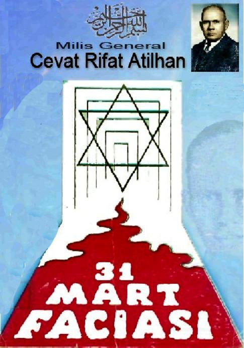

31 MART FACİASI
Türk tarihinin sayılı ve tipik hâdisesi olan 31 Mart faciası denildiği gibi bir irtica vak'ası mıdır, yoksa bir ihtilâl mi?
Şimdiye kadar bu mevzuda yazılan eserlerin hep-sinde, hakikat ve oynanan câniyâne oyunu gürültüye getirmek ve bu çok mühim hâdiseyi tarihten ve milletten gizlemek için çok fazla gayret sarf edildiği ve zatı meseleye asla temas edilmediği görülmektedir.
Daha garibi, bu mühim mevzu hakkında neşriyatta bulunan gayretkeşlerin ve taraf tutanların bazıları isim-lerini açıklamaktan bile çekinmişlerdir.
Milletimizin, çok uzun süren bir gaflet uykusundan henüz uyanamadığı bir sırada patlak veren bu âzim fe-satta birçok mânalar ve hakikatler gizli olduğu halde, maalesef hiç bir kalem sahibi düşmanlarımızın marifeti ve eseri tertibi olan bu yüz karasına el koymaya ve yaraya neşter vurmağa cesaret etmemiştir.
Halbuki milletimizin 31 Mart mürettep ihtilâlinden alacağı pek çok dersle olduğu gibi, bu menfur hâdisenin iç yüzünde de gayet mühim, acı ve tüyler ürpertici hakikatler mevcuttur.
31 Martı hazırlayanların meydana getirdikleri plân-lı gürültü ve ruhlara aşıladıkları dehşet ve korku o kadar büyüktür ki: Aradan elli yıl geçmesine rağmen hâlâ es-kisi gibi bir sinme ve çekinme mevcut olduğu inkâr edilemez.
P: 1
Bu kitapta isnat ettiğimiz deliller, tahliller ve muteber vesikalarla şunu isbat etmek istiyoruz ki: 31 Mart kanlı vak'ası; Türk milletini topyekûn dize getirmek ve muazzam vatanımızı parçalamak, bir kısmı üzerinde de kendi saltanatlarını kurmak için Siyonizm ve Farmason işbirliğinin yarattığı sistemli ve plânlı bir suikastin ta kendisidir.
Buna dair şimdiye kadar söylenen ve yazılanların çoğu hep acı hakikati ve düşman oyununu tarihten ve milletten gizlemek içindir. Artık tarihe gömüldüğü zan olunan bu meseleye kimse temas etmeğe cesaret etmesin ve facianın iç yüzü aydınlanmasın diye daha geçenlerde neşredilen avuç içi kadar bir broşürün başında, 31
Mart felâketinin:
«Softalar ve istibdat artıkları tarafından iğfal edilmiş ve halkın ayaklanması ve yahut cehalet vc zulmet-le ilme ve aydınlığa bir baş kaldırma» şeklinde tasvir edilmiştir.
Tarih hiç bir zaman bu kadar tahrif edilmemiş ve bir millet alel ıtlâk böylece tahkir edilmemiştir.
Bütün bu eserler milleti sahil ve mürteci göstermekten menfaat bekleyen ve bu sayede ayakta duran gizli ve maksatlı düşman teşekküllerinin eseridir.
Evet kültür bakımından geriyiz. Bunu hepimiz biliyoruz Düşmanlardan öğrenmeğe de ihtiyacımız yoktur.
Bu gün hâlâ yirmi bin köyümüzün mektepsiz olduğunu da biliyoruz.
Koskoca imparatorluğumuzun asırlar boyunca tekmil ağır yükünü tek başına taşımış olan kerpiç Anadolunun bahtsız evlâtları hâlâ medeni bir yuva, medenî bir köy ve lüzumlu bir tahsilden mahrumdur. Onu geric cahil gös-terip bu perde arkasında ipliklerini boyayan, dolaplarını döndürenlerde zerre kadar samimiyet olsa idi şu yarım asır için de, kerpiç Anadolunun harap manzarasını değiş-
— 4 —
tirmek için bir miktar gayret ve hüsnüniyet sarfetmeleri gerekirdi.
Türkün ezelî düşmanları tarafından hazırlanan ve sahneye konan bir hâilenin temcit pilâvı gibi ikide birde ortaya dökülmesi sebepsiz değildir. Milletin bir gün uya-nip, kendisinden gizlenen bu son hakikatler meyanında şu 31 Mart isyanında iç yüzüne nüfuz etmesi korkusu, müslüman Türk düşmanlarını zaman zaman faaliyete sü-
rüklüyor.
Ne zaman millette bir uyanıklık, bir ilerleme hamlesi müşahede edilse, yahut mânevî benliğine vurulan zin-cirleri parçalamak azmi belirse derakap hüviyetleri ve maksatları malûm zümreler, ayaklanır ve bu mürettep, sahte, 31 Mart faciasını ileri sürerek en masum ve meşru hareketleri olduğu yerde boğmaya çalışırlar.
İstiklâl ve hürriyet aşkı, adalete hasret, terakki ve tekâmül gayreti gibi bir milletin en meşrû ve tabiî hakkı olan mefhumlar ne zaman millet'mlzin gönlünden ve ruhundan tam bir samimiyetle fışkırsa hiç vakit geçirmeden dönme siyonist ve farmason triyomf virası faaliyete ge-
çer. Yılan basını kaldırır.
Gazeteleri var yazarlar, köse baslarını tutmuş hatip-leri var konuşurlar. Bizim, yani milletin özünü ve ruhunu teskil eden cogunlugunun gazetesi yoktur. Yazamayız.
Fırsat vermezler konuşamayız. Daima itham edilen, daima siyonist, mason ve dönmenin hedefi târizi olan insanların ve bu arada Türk müneverlerinin ölü gibi sessiz, müslüman Türk zenginlerinin taş gibi hissiz, din hiz-metkârlarının pasif ve çekingen hareketleridir ki düşmanlarımızın cesaretlerini arttırmış ve bu cesaret kudurmuş
bir mahiyet almıştır.
Zaman zaman ve durup dururken masum sessilikleri yirtan şarlatan ve necabetsiz bir yaygara afaka yükselir, salyalı ağılardan şu sözler dökülür:
irticaaaaaa..,
Ve hiç bir defasında milliyetçi ve mukaddesatçı, vatansever Türk kalemlerinin el birliği ile bu menfur yay-garaya cephe aldıkları görülmemiştir...
Ne yazık ki dâima yedeo-masonik kaynaklardan ortalığa fışkıran bu çirkef, bu iftira dâima bir müddet için bizi sindirir, pusturur ve susturur...
Bu aziz ve mukaddes yurtda, akıl ve mantıktan, din ve imandan zerre kadar nasibi olan tek bir fert tasavvur edilemez ki ne irticaî, arzulasın, re de cehaleti körüklesin.
Eğer bize sonu gelmez tarizler ve taarruzlarda bulunan insanlar ve cemiyetlerde kıl kadar bir hüsnüniyet olsa idi, milletin irfanına ve refahına hizmet eder, aya-
ğına çarıklarını takar, Anadolunun nur ve ziya, ilim ve irfandan mahrum hücra köşelerinde bu uğurda emek ve gayret sarf edenler nur ve ziyayı sadece mason localarına maske etmezlerdi...
Bunun içindir ki 31 Mart faciasını ele ve kaleme al-dik, Onda gizli olan bir çok tertipleri, iğrenç entrikaları, vicdansız oyunları açıklamak istedik.
Bu, bizlerce lüzumlu bir ders ve başımızı öne eğip aczimize, zaafımıza, gafletimize ağlanacak mevzudur.
Esasa girmeden evvel Türk edibi ve mütefekkiri feylesof Rıza Tefvik Beyin mahkeme huzurunda söylediği şu şayanı dikkat sözleri başa alıyorum:
— Hâkim Bey, Allah bizi affetsin... Günahımız çok büyüktür. 31 Mart uydurma ihtilâli hazırlandıgi zaman ben Talât Beye:
Bundan tevakki edilmesi lâzım geldiğini söyledim.
Beyhude yere kardeş kanı dökülmesinin ne büyük cinayet olduğunu anlattım. Bunun fena aksülâmeller doğura-
•—• 6 —•
cağını da hatırlattım, aldığım cevap şu oldu:
— Ne yapalım Rıza Bey... Cemiyetin paraya ihtiyacı var. Bizim ihtiyacımızı ancak Yıldız Sarayının zenginliği karşılayabilir...
Nazırlık etmiş, saçı sakalı ağarmış muhterem bir za-tın adalet huzurunda söylediği bu sözler, bu tarihî mu-ammanın tekmil meçhullerini çözmeğe kâfi gelir ise de, biz, elde mevcut delillere ve ipuçlarına göre bu facianın bütün karanlık taraflarını aydınlatmağa çalışacağız. Tarihe olan bu hizmetimiz, gelecek nesiller için dâima bir ibret levhası ve bir acı ders olarak kalsın...
* * *
31 Mart kanlı hailesi, ne bir başlangıç, ne de bir sondur. Kökleri derinlerde ve yakın mazimizin karanlıklarında gizlidir. Bizim idaremizi düzene koymak, milletimizi Avrupaî bir terakki yoluna sokmak, ıslahat yapmak gi-bi iddiaların hepsi birer bahaneden ibarettir. Büyük Türk imparatorluğunun sayısız servetine göz dikenler, bize hep bu yaldızlı maskelerle hulûl etmek istemişlerdir. Ve böylece muvaffak olmuşlardır.
Menfaatlerini milletlerin geriliğinde ve gafletinde arayan emperyalistler ve sönmürgeciler, kanını emmek, servetlerini yağma etmek istedikleri milletleri hep bu tatlı sözler, bu ıslahat ve tanzimat yaveleriyle avlamışlardır.
Hele Farmasonlarm sahte hürriyet, adalet ve müsavat kli-
şesi sadece bir tuzaktan ibaret olup ona aldananlar bu yalanların çok acısını çekmişler ve hüsranlara gark olmuş-
lardır.
Türk imparatorluğunu mutlakiyetten meşrutiyete, is-tibdatdan hürriyete geçirmek İddiasında bulunanların millete ilk hürriyet hediyesi İstanbul'un muhtelif yerlerinde kurdukları idam sehpaları olmuştur. Bunu yapmak _ 7
için de 31 Mart cinayetini bu hürriyet kabadayıları bizzat kendi elleriyle hazırlamışlardır.
Düşmanlarımız hiç bir vakit bizim hür, mes'ut ve uyanık olmamızı istememişlerdir. Çünkü uyanık, çalışkan, kültürlü ve idaresi düzgün milletleri ve cemiyetleri sö-
mürmek, fertlerini köle gibi kullanmak mümkün değildir.
Onlar; kaninı emmek, zenginliğini tâlân etmek istedikleri milletleri daima birbirine düşürür, aralarına fitne ilka eder ve her nevi ahlâksızlığı yaymak için sinsi ve ustaca çalışırlar. Nitekim müslümanların hasmı canı olan Siyonistlerin hazırladıkları cihan fesat programinin birinci maddesi şudur:
«Genç nesli mugayiri ahlâk telkinatla ifsat etmeli.»
Bu böyle iken yâd illerden esen türlü hürriyet ve ıslahat havalarının samimiyetine inanmak milletimize son derece pahalıya mal olmuştur.
Müslüman Türke zaman zaman tevcih edilen ittiham-ların hiç birisi samimî ve dostane değildir. Bunlar gizli emellerin, büyük ihtirasların bir an evvel gerçekleşmesi için birer bahaneden başka bir şey değildir.
31 Mart hâdisesi ve ona tekaddüm eden günlerde ileri sürülen iddialar hep aynı ruhun mahsulüdür.
31 Mart menfur ve mürettp hâdisesinde Anadolu'nun bahtsız evlâtları, her şeyden bihaber olarak sadece fi-güranlık vazifesi yapmışlardır.
Kanlı hâilenin senaryosunu hazırlayan, sahneye koyan Siyonist Farmason ve dönmelerdir.
Anadolu çocukları, bizim günahımız ve gafletimiz ve alâkasızlığımız yüzünden cahil kalan bu bedbaht insanlardır ki, asırlar boyunca bizim idarî hatalarımızın tashihi, isyanların tenkili ve bir cümle ile sadece mübarek kanını akıtmak vazifesini görmüştür.
Bu yetmiyormuş gibi her şeyden bihaber 31 Martta da okkanın altına o girmiştir. Çanakkalede âbideleştirdi-
- 8 -
ğimiz Mehmetçik, köyünde metruk bir köle gibi yaşamaktan ileri gidememiştir. O daima ihtiraslarımıza basamak, fona idaremizin doğurduğu hâdiselerde sadece düzeltici bir âlet olmaktan ileri geçmemiştir. Makedonya ayaklari-malarını o bastırmış, Yemende zaman zaman alevlenen ateşi o söndürmüş, Havranda çıkan hâdiseleri o önlemiş, tekmil harpleri o yapmış, mucizeleri o meydana getirmiş-
tir.
31 Mart isyanından sonra da iplerde can veren o ol-muştur.
Bu kadarla da kalmayarak Bulgar, Rum, Çingene, hep ona karşı silâh çekmiştir. Makedonya eşkıyası gösteri ve cakalarım ona yaptırmıştır.
İşte bu dekor ve düşünceler içinde 31 Mart faciasını çok iyi incelemek, oyunun perde arkasını ve maskeli ca-nilerini bulup çıkarmak bugünkü neslin tarihe karşı en büyük vazifesidir. Ancak o zaman, her fırsatta uluyan ve en küçük bahanelerle iftiralarını tekrarlayan gizli düşman kuvvetlerinin sesi kısılır ve maskesi düşmüş olur. Aynı zamanda bizler de ne derin bir gaflet ve ölüm uykusu geçirmiş olduğumuzu anlarız.
* * *
31 Mart kanlı faciası, hiç şüphesiz tarihte bir yüz karasıdır. Bu yüz karası mürteci ve müslüman Türk düş-
manı gizli teşkilât tarafından daima bizim yüzümüze sü-
rülmek ve daima aleyhimize silâh olarak kullanılmak is-tenmiştir.
Bu oyun ne zamana katlar böyle devam edecek, gizli düşman teşkilâtı ne zamana kadar bu vakaları parmağına dolayıp zehirlerini kusacak, ne zamana kadar bu hâile aleyhimize bir tehdit ve sindirme vasıtası olarak kalacak, en mühimi tarih ne zamana kadar Farmasonlar ve or-takları tarafından aldatılacaktır?
- 9 -
Düsınanın suratindaki maske düslüğü ve 31 Martı tertip eden hakikî canilerin hüviyetleri bütün çıplaklığiyle ortaya döküldüğü gün!...
Biz bu tarihî vazifeyi üzerimize aldık. Onun için de tezimizi sokak gürültülerine, Ayasofya ve Fatih meydanlarındaki yaygaralara değil, vesikalara, muhtelif görüş-
lere, tetkiklere, tahlillere ve müsbet müşahedelere istinat ettirdik.
Bu kanlı facianın göze çarpan objektif manzarası sadece kökünden yıkılmak istenen büyük bir imparatorlu-
ğun çöküşünün çıtırdılarından başka bir şey değildir.
O günün esrarını tarihin derinliklerinde bulacak vc bundan sonraki satırlarla tebellür ettireceğiz.
Her şeyden evvel, cümlemizin birinci vazifesi asîl ve necîb milletimizin nasiyesine sürülmek istenen bu tarihî lekeyi .silmek, mücrimleri meydana çıkarmak, onları tarih önünde teşhir etmek ve bu kara lekeyi bir daha çıkar-mamak üzere onların murdar ve maskeli suratlarına sürmektir. Böyle yaptığımız takdirde, cibiliyetsiz gizli teşek-küller bize her istedikleri zaman göz dağı vermeğe asla cesaret edemiyecekler, bilâkis asırlardan beri işledikleri cinayetler vc çevirdikleri dolapların altında ezilip hurda-haş olacaklardır.
Millî intibah müslüman Türk düşmanlarının mezarı ve ölümü olacaktır.